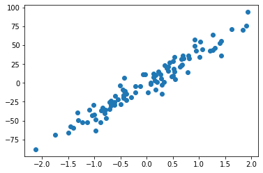

Contents
from sklearn.datasets import make_regression
from matplotlib import pyplot
X_test, y_test = make_regression(n_samples=100, n_features=1, noise=10)
pyplot.scatter(X_test,y_test)
pyplot.show()

y_test
array([ 55.43290844, -69.06708351, -66.2335612 , -8.64310356,
-42.4846113 , 12.32477065, 70.0440983 , -35.4087879 ,
-43.02115684, -8.93358684, 1.04024117, -28.76071409,
-34.59867285, -48.27516171, -17.51811178, 42.73323898,
31.66403926, 43.56640888, 3.46365811, 14.89786723,
-38.89353006, -51.91781776, 32.1880687 , -32.94549652,
-25.46315 , -63.18009001, 5.72979348, 29.3129838 ,
57.6368128 , -16.16784024, 52.89649371, 63.86648025,
23.78229053, 4.80391559, -25.19845658, 55.08903146,
9.45871842, 8.69982801, -51.87197356, 44.25081834,
36.44805431, -22.55456413, 21.10161555, -36.40751573,
21.6476309 , 19.77487101, 42.66076739, -40.44673687,
0.23098435, 7.10677697, -4.27441429, 46.65280423,
-3.90378533, -3.306407 , -10.80725242, -59.79329687,
14.72580314, -20.09275414, 11.46426454, 75.97794233,
-12.86514658, -35.61140989, 34.67691654, 32.14812951,
-14.28924372, -1.33988616, 14.0965466 , 23.38945371,
7.44168196, -52.22550652, -10.48193443, 11.27050788,
-49.52105466, -18.64320779, -30.57664452, 15.56543889,
94.08278439, 36.68532509, 10.94894067, 71.22114369,
18.66465798, 24.56025114, -28.42115652, -88.13093972,
-21.39249532, -2.59016802, 36.27849118, -46.8019856 ,
10.3498816 , -23.93248498, 34.79544043, -27.75967589,
48.69316901, -58.138988 , 26.91429859, -14.88321991,
-18.87925758, -29.61489237, 1.07131744, -12.8485939 ])